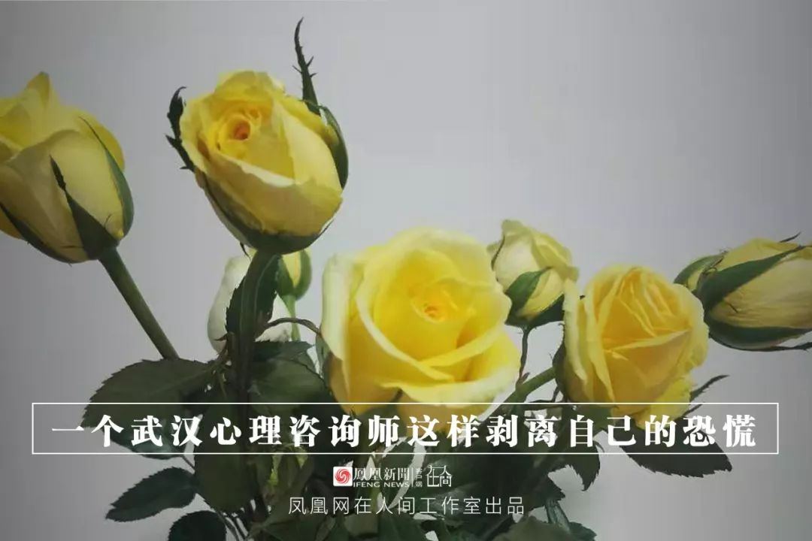
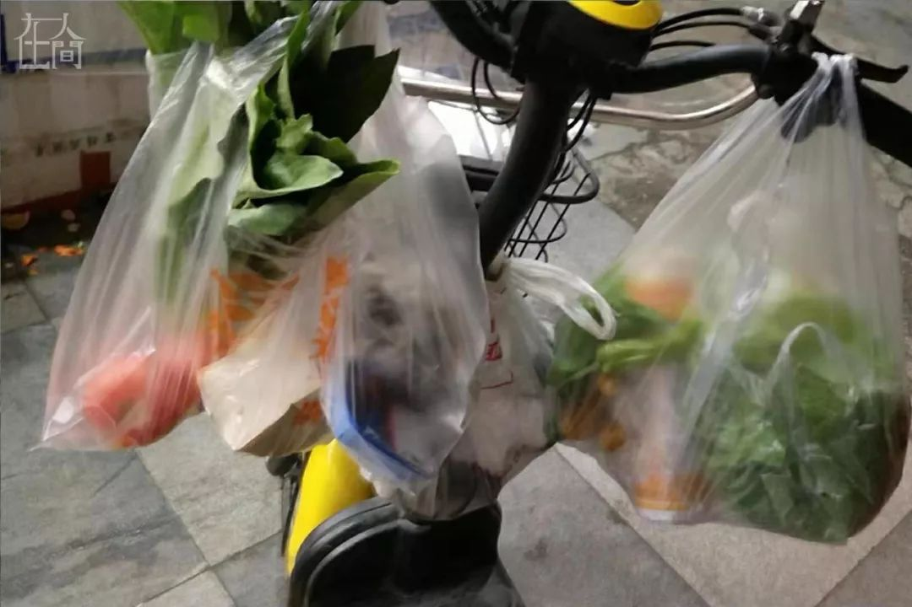
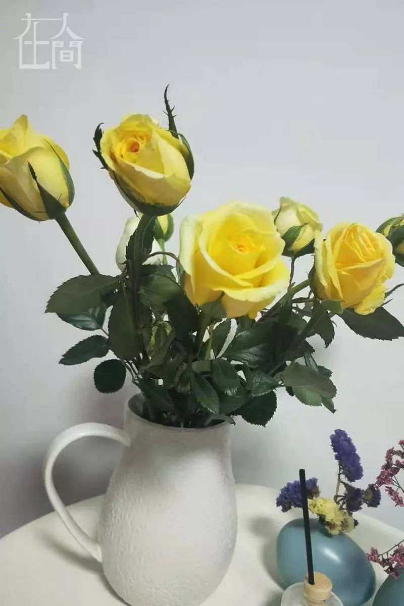

在人间 | 一个湖北母亲的三天三夜
原文链接 备份链接 离开湖北境内的时候，我百感交集。我的父母和亲友还在那里，他们将会面临什么，谁也不知道。 作为一个去过疫区、带着孩子又成功离开的湖北人，我有责任把这几天的历程客观记录下来，希望能够给诸多还在恐慌中的人多少一些参考意义。 …


2020年的春节，我一个人在武汉度过。
1月16日，小年夜的前一天，家人和好友询问我的归期，我回答还不能确定。我是一个心理咨询师，这段时间积攒的案头工作和学习的课程太多，便想着只给自己放三天假，回去跟家人吃个年饭就返回。
1月23日，武汉“封城”，我是想回但回不去了。
直到正月初二，我坐在电脑前打算写点什么，发现只有对“恐慌”两个字的体验是最深的。网上有一篇爆文《武汉一位医生的心声：停止恐慌》，语气带着医生特有的超然与冷静，但停止的声音特别像是从我们人体最靠上的部位发出来，那是大脑皮层所在的地方。
我的恐慌似乎充斥于全身每一个细胞，每一寸皮肤，渗透在我的一言一行，一呼一吸之间。我与它近距离相处了十天，如今，并不是大脑指挥我赶走了它，而是我与它从完全隔离不见，到了一个可以朝夕相处，甚至是相知相惜的地步。
每天，我看着家里的大门，思忖着要不要戴着口罩走出去。然而，有个声音在说，不，我还不敢出门。这个时候，我就知道，我的恐慌，它还在，它的呼吸与我的呼吸连在一起。我无法停止恐慌，但是可以像脱一件衣服那样，暂时剥离它。
从1月18日起，我开始一个人生活。那天一大早，孩子和他的父亲登上了离开武汉的火车。网上对于“肺炎”的报道稀松平常到让人完全忽视，两位外地好友发来相关文字和图片，我们也只是随意聊了两句。那个时候，我连口罩上有条金属线都不知道。
1月20号，我在家门口的药店买了两包共20个外科医用口罩，店员建议我买5包备着，我笑着拒绝了。回家后，我开始通过视频学习如何正确地佩戴口罩。当天晚上，武汉公布1月18日和19日两日共新增136名确诊患者，而前一次公布的新增病例只有17个。我心里略微一惊，但放眼四周，出门戴口罩的人寥寥无几，我便依然没太在意。
1月22日，腊月二十八，我开始收到预订的鲜花、水果和几样“网红”点心，有哈尔滨特产提拉米苏蛋糕、俄罗斯风味的香蕉饼和成都的麻辣牛肉干。我美美地盘算，一个人的日子也可以安排得有滋有味。晚上，我做了年前最后一个视频咨询，来访者身居外地。她一天前在武汉高铁站中转，发现车站里大家都戴着口罩，只有她没有。她埋怨我，作为她的咨询师，我居然没有提前告诉她武汉是这种情况。

■平时码得高高的蔬菜被抢得七零八落。

■最后一次出门买菜，大概是五天的量。
1月23日上午十时，武汉开始“封城”。老实说，这也没让我感觉到有多恐慌。随后，很多消息突然铺天盖地涌过来，除了官方每天更新的数字，还有更多质疑的声音。同学群里，朋友圈里陆续有人说买不到口罩，药店治感冒、抗病毒的药也被抢光了。我们小区的超市，平时高高码放着的各类蔬菜被抢得七零八落。那是我最后一次出门买菜，大概是五天的量。当日，我取了年前最后一个快递，那是一大袋打豆浆用的黄豆。

“封城”后，我的作息不知不觉变得紊乱，食欲也不好，感觉不到饿。我每天只吃两顿饭，凌晨一两点还抱着手机不停刷屏，翻看与“新冠肺炎”相关的任何信息，不想错过各种不知名群里转发的每一条视频。那些医护崩溃的视频，令人格外震惊。
我有一个“中美班同学群”，群里有人在武汉，也有人散落在全国各地。我把医护崩溃的视频扔进群里，并说自己不愿意相信这是真的；群里同学也流露出强烈的震惊和担心，有同学质疑我的不相信，我感到很愤怒。
一个在外地的同学告诉我们，她哥哥一个人在武汉，发烧了，找不到医院收治。同学哭诉，她很担心哥哥。
那天晚上，我不记得有没有吃晚饭。当我浑浑噩噩躺在床上的时候，遏制不住地大声哭了起来。我感觉似乎一下子掉进了另一个世界，有种强烈的被分裂感。现实世界完全关闭，网络变成了我的全世界。
我的大脑里，充斥着一幅画面：医院里人满为患，到处是发烧的病人和疑似感染者；死在走廊的病人无人处理，无助崩溃的医生，没有药，没有床位……我想象着，只要一出门，就会被传染，如同丧尸世界里那样，只要被咬一口就变成了丧尸，不再是一个正常的人。
我没有把这些告诉外地的家人，只是简短描述生活现况，以防他们担心。这个同学群和群里同城的一个好友成了我最大的生活支撑。我没有办法按计划开始工作和学习，只是无止境地陷入到手机刷屏的行为里。
我开始反观自己，注意我自己的行为、想法和身体变化。我意识到，我已经特别恐慌了，只是在用最原始的否认机制防御我最真实的恐慌。
真正恐慌的是病毒潜伏期。你无法确定你是否被传染。“封城”当天，汉口火车站约有4万人离开，还有人花高价包出租车试图去往武汉周边城市。我不清楚23号逃离武汉的人具体数字有多少，但我知道，在那些逃走了的人心里，并没有真正离开恐慌。14天潜伏期就像一个无形的牢笼，那种如影随形的恐慌感从23日开始，到未来的14天都不会离开你。
每个人在其一生中不可避免会遇到应激或是挫折，但并不是所有都不能应对。能够处理应激或是挫折，通过努力可以恢复心理平衡的人只是经历了一场恐慌。一旦这种应激和挫折不能自己解决、又无法回避，则会导致严重的心理失衡。这时候，人的心理状态会呈现出一段时间的解体和混乱，会出现崩溃、大哭、严重失控的言行举止，这就是心理危机。
面对危机时，人们处理应激和挫折的能力与心理弹性成正比，同一个意外事件，不同的心理弹性决定了不同的行为表现。

人在与世隔绝的时候，获得的信息是不完整的。我注意到，我每天沉溺于手机刷屏关于“新冠肺炎”的消息，一方面是想借助他人的不完整，拼凑出想要的信息完整，好让自己有点掌控感；一方面是身体仍然处在恐慌当中的逃避行为。

1月24日，大年三十那天，起床后，我很郑重地拟好了年饭的菜单。也许是23日晚上的大哭释放了大部分的紧张和恐慌，我明显感觉到精神上有所放松。
当我再次看到“病人在医院拥挤”的视频，还有诸如某小区抬出了病人，直接盖着白布被救护车拉走了之类的事情，我好像都没有再卷入的感觉。这些信息综合起来给我的印象就是：情况的确不好，但问题集中在病人收治和医疗物资的短缺上，还有什么别的恐慌的理由吗？
好像也没有了。
这个时候，我也注意到，我的朋友圈里还有一些人，他们关注新闻，但并没有深刻的情绪卷入。他们依然发布全家人一起吃年饭的图片，也有抱怨生活突然只剩下了吃和睡，多少有些无聊。他们的存在让我看到了真实世界的一部分，除了“肺炎”还有新年和春晚。人们谈论“肺炎”，但“肺炎”并不是他们生活的全部。
这依然是一个只有网络接触的世界，我却好像从风暴眼的中心撤离了出来，找到了我自己该有的节奏。
1月25日，陆续收到亲友的新年祝福，很多人特意询问武汉的情况如何，还好吗？从未谋面的网友也发来问候。那种问候就像是说，我不认识你，但关注着你。我逐一回复了“抱抱”的表情。
我非常清楚地感知到自己的情绪和感受，身体里的浑噩感彻底地消失了；前几天时不时冒出来的嗓子轻微疼痛的感觉也完全消失了。
我可以很清醒地复盘23号晚上那些画面带给我的冲击了：在这个已经被隔离起来的城市里，我们每一个人因为疫情反而有一种生死与共的亲近感。医生和护士就是处在暴风眼中心的人，他们中间如果有人因为扛不住压力崩溃了，这个崩溃的感觉会回旋传递给这座城市里的每一个人。
恐慌犹如一场龙卷风暴，它从少数人的危机开始，迅速席卷了大部分的神经。
我的不幸在于，需要一个人面对这场风暴，孤独感似乎加重了我的恐慌。幸运的是，我抵抗住了风暴的袭击。我可以像脱掉一件衣服一样，脱下我的恐慌。当脱下它的时候，我看到它就在我的旁边。
我可以恢复到正常的生活节奏里，晚上十一点前上床，早上八九点醒来，安排一天的工作了。
在心理危机干预临床范畴，确定一个人是否遭遇到了心理危机需要符合三个标准：
1、存在具有重大心理影响的事件；
2、引起一个人急性情绪扰乱或是认知、躯体和行为等方面的改变，但是又不符合任何精神病的诊断；
3、当事人或是患者用平常解决问题的手段暂时不能应对或是应对无效。
临床危机的状态可以描述为一种解体状态，在这种状态中，人们遭受重要生活目标的挫折，他们的生活周期和应对挫折的方法受到严重的破坏。
危机本身是因为某种破坏所产生的害怕、震惊、悲伤的感觉，而不是破坏本身。
如果我们学会将害怕、震惊的感受从破坏性事件本身剥离出来，我们就离开了风暴中心，安然着陆。

■花是特意给自己准备的，打算美美地过年，
1月26日，早上醒来，我感觉自己的身体状态已经完全恢复正常，睡醒后精神饱满，没有沉重感，有饥饿感。当身体机能各项都恢复到常态的时候，就是这样的感受。
回头看，整个新年，对于年味，我一丁点儿感觉都没有，更像是关了一场禁闭，经历了一场炼狱。回顾整个历程，我有三点经验想分享给有类似经历的你：
1、正确看待危机。危机看起来是危险的，但并不等同于危险或是灾难。一方面，它可能导致个体严重的失控或是病态，极端的可致杀人和自杀；另一个方面，它也是一种机会、机遇。它带给当事人的痛苦会促使当事人寻求帮助，如果当事人能够利用这个机会得到恰当的帮助，不仅学会了“吃一堑长一智”，能够成功摆脱当前的危险或是威胁，还会因此获得巨大且难忘的个人成长体验。
2、善于使用周围的资源。朋友圈里有很多有针对性的心理自助措施，包括冥想训练、正念音频导练、肌肉放松训练法、居家运动体式视频等。也许你并没有受过专业的心理训练，但是这些简单有效的心理自助方法并不需要具有高深的理论知识，它们简单有效，只要选择适合自己的方法，就静下心练习，可以很好消除内心的恐慌与焦虑情绪。
3、不要让自己处在真正的孤独无助的境地里。让自己总是处在有朋友和家人支持的境地里，通常来说，情绪危机的自限期是6周左右，在这段时间里，鼓励将情绪和感受对信任的人讲述出来，宣泄本身可以帮助舒缓焦虑与恐慌。
另外，心理援助热线也可以很好地帮到你。
这次疫情当中比较早经历家属染病去世的人群，还有一线的医护人员家属，心理治疗性干预能够帮助他们比较平稳地渡过心理危机，并有望达到事半功倍的效果。
1月25日是个很重要的时间节点，这一天，中共中央政治局常务委员会召开会议，专门听取新型冠状病毒感染的肺炎疫情防控工作汇报，对疫情防控特别是患者治疗工作进行再研究、再部署、再动员。似乎从那天起，我周围的朋友圈转发的内容，还有各个群里的气氛开始从一个颓势扭转过来。陆续有外省的医疗组和医疗救援物资进驻武汉，也很少再看到医院和医生的个人求助信息发出来。我在想，最该得到安抚和重视的人和事开始被重视，防疫最重要的环节也开始变得合理与有序，这让我感觉找到了更大的支撑和保护。
1月24日，我志愿服务三年的武汉市心理危机干预热线恢复电话接听。小组里的老师聚在线上工作组里讨论工作细节，将现场接听改为线上接听，收集与疫情相关的各种资料，医院也为我们配备了高频次的督导支持。组里30多位老师轮流值班，应对高强度的电话危机干预工作。
我的值班日期排在了1月27日，我选择那一天，是我自评已经完全恢复到了可以工作的状态。
整个“封城”事件，对与我一样留守在武汉的900万市民来讲，心理影响是巨大的。
如果说疫情是个意外性的灾难，“封城”对于某些特殊人群可能意味着创伤。比如早年遭遇过遗弃、分离、居丧、亲人重病等，“封城”会激发早年创伤的感受，使人体验到严重的绝望、被抛弃感、激发抑郁和焦虑情绪。这些创伤可能要等到“封城”解除，疫情逐渐消除的时候才会慢慢浮现出来。
我试图通过自身亲历的恐慌历程，告诉大家，“肺炎”疫情叠加“封城”事件，二者对个体都会发生巨大影响。不要因为出现极端情绪反应有羞耻感，也许在未来的一段时间，你依然会陷入到不知名的紊乱当中无法走出来，请给予自己最深的理解。害怕是正常的，请鼓励自己，勇敢寻求救助和支持。请相信自己还有机会恢复到正常的生活状态。（文/黄红玲）


新型肺炎疫情牵动人心，
《在人间》现面向全国网友征稿：
(一) 疫区影像日记
如果你身处疫区
请你用照片（视频）和文字记录
你所听闻和见到的一切
照片不少于3张
文字不少于300字
投稿方式：微信联系人间君（zairenjianliving）
（二）抗击疫情真实故事
无论你是一线医护人员、志愿者、
确诊或疑似患者及家属、已治愈出院人士等等，
如果希望讲述疫情相关经历，
请微信联系人间君（zairenjianliving）

原文链接 备份链接 离开湖北境内的时候，我百感交集。我的父母和亲友还在那里，他们将会面临什么，谁也不知道。 作为一个去过疫区、带着孩子又成功离开的湖北人，我有责任把这几天的历程客观记录下来，希望能够给诸多还在恐慌中的人多少一些参考意义。 …
原文链接 备份链接 作者 | 王晓 出品 | 棱镜·腾讯小满工作室 欢迎下载腾讯新闻APP，阅读更多优质资讯 对于湖北人民来说，2020年的这个除夕夜太不平常了。 “药店大姐告诉我们，口罩绝不涨价，不发国难财，而且告知我们第二天早7点开 …
原文链接 备份链接 这注定是一个难捱的春节。 截至1月23日24时， 全国确诊新型肺炎病例830例， 死亡25例。 截至1月23日晚，中国新型肺炎疫情地图（来源：丁香医生） 同时，国际确诊案例也陆续出现。 截至1月23日，数据如下： 泰 …
原文链接 备份链接 历史上，很多置人于死地的病毒并不是被人类消灭了，而是人类和它们分开居住了。 记者 | 吴洋洋 许冰清 刘娉婷 郑晶敏 郭苏妍 邓舒夏 数据资料整理 | 王一越 图表制作 | 程 星 确诊人数出现激增72小时之后，武汉 …
原文链接 备份链接 【财新网】（记者 黄蕙昭）一则半夜发布的“封城”通告惊动全国，也拉开武汉肺炎防疫之战新势态。1月23日凌晨两点，武汉市新型冠状病毒感染的肺炎疫情防控指挥部通报宣布，今日10时起，武汉公交、地铁、轮渡、长途客运暂停运 …